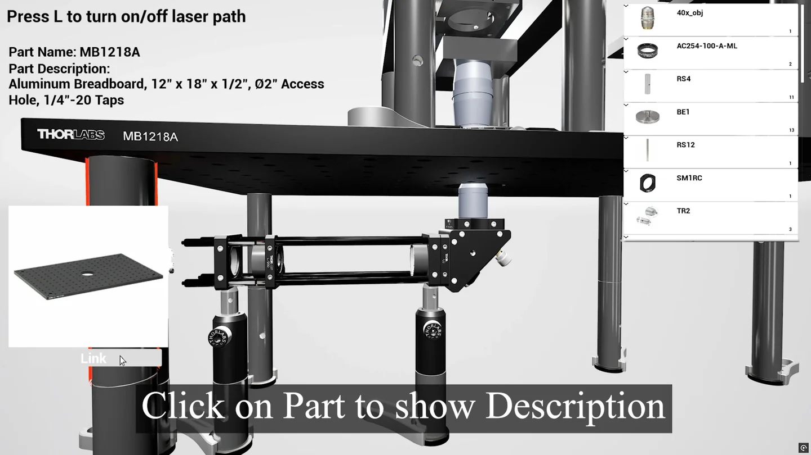
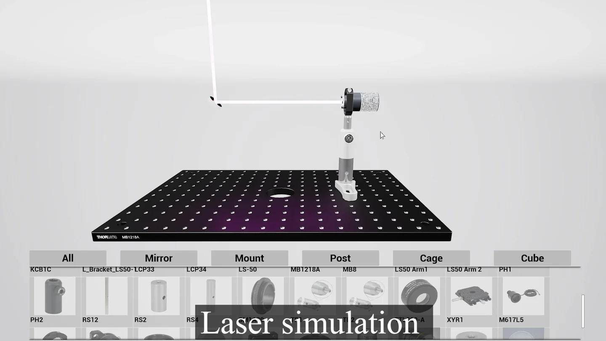

Microscope visualization
WideField
Assembly.
An interactive model of a wide-field microscope. Inspect the optics, step through the build sequence, and assemble a setup of your own in Unreal Engine 5.6.
Unreal demo
Silent screen recording with on-screen labels. The demo moves from inspecting the model to playing the assembly sequence, snapping parts into place, and tracing light through the optics.
Project context
On a physical optical bench, the position of each lens, mirror, and mount matters. WideField Assembly gives learners a virtual bench where they can inspect those relationships before handling the hardware.
I worked on the visualization during my OpenTIRF internship with UW–Madison’s Open Source Program Office, from summer 2025 to summer 2026. The model in this demo is a wide-field microscope.
UW–Madison project catalogMy contributions
Bringing the build sequence into Unreal
I imported the Blender assembly animations into Unreal and implemented interactions for exploring the model. The playback controls let a learner pause at a particular step or drag the timeline to revisit how two parts fit together.
Making the logic easier to review
I converted core Blueprint logic to C++. That put changes to the interaction code into a text format that contributors could compare and review in Git.
My summer 2026 lightning talkScreenshots


Inspecting a component
Selecting a part reveals its name and description. The list at the right tracks components visible in the scene.


Tracing the light path
The beam makes the optical layout visible. Changing a mirror’s orientation changes where the light travels.